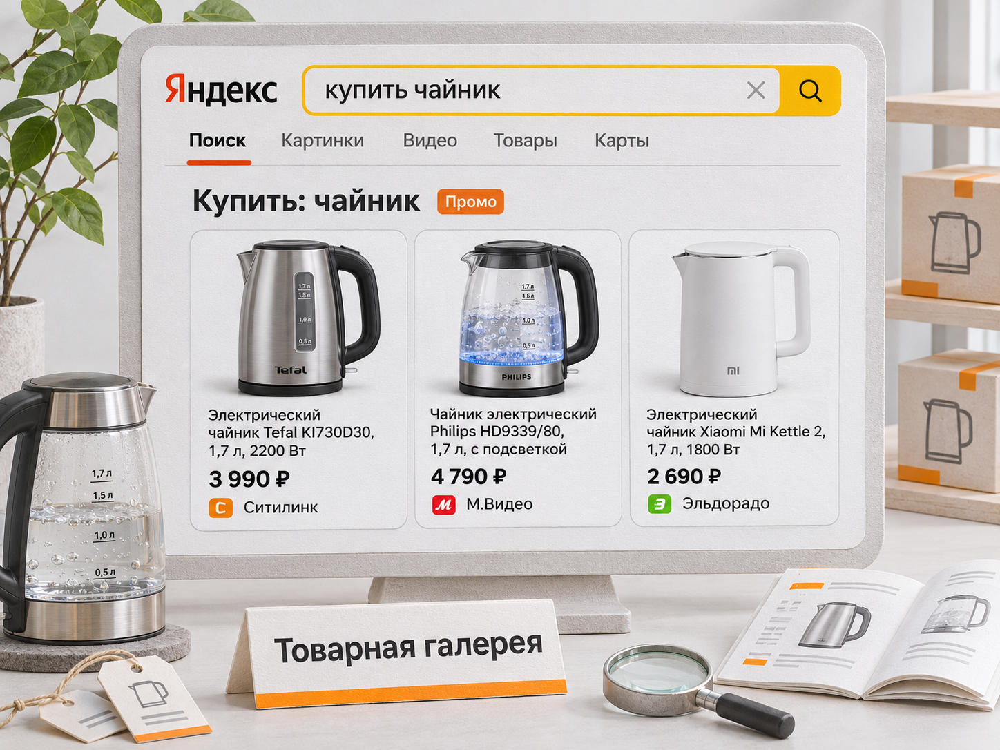

Как отличить товарную галерею, РСЯ и органические объявления в Яндексе
Если вы проверяете размещение своего магазина или анализируете конкурентов, одной картинки в выдаче недостаточно. Товарная галерея, блок РСЯ, поисковое объявление и органический результат могут выглядеть похоже, но создаются из разных источников и относятся к разным типам размещения.
На практике их можно отличить за несколько секунд, если смотреть не на саму картинку, а на подписи и структуру блока.
Короткий ответ такой:
- Блок «Может заинтересовать» + метка «Реклама» - это РСЯ.
- Блок «Предложения магазинов» + метка «Промо» или подпись «Купить: ваш запрос» + метка «Промо» - это Товарная галерея.
- Нет пометки «Промо» или «Реклама» - это органика, а не Директ.
- Есть метка «Промо», но блок не похож на Товарную галерею - это классическое поисковое объявление или динамическое место на поиске.
Если хотите глубже понять, как вообще устроены показы рекламы в Яндексе, посмотрите разбор как работает Яндекс Директ.
Сравнение товарной галереи, РСЯ, поиска и органики
| Формат | Что видно | Метка | Источник данных | Кампания или источник | Место показа |
|---|---|---|---|---|---|
| РСЯ | Блок «Может заинтересовать», один оффер, возможна картинка | «Реклама» | Объявление и посадочная страница | ЕПК с показами в сетях | Отдельный рекомендательный блок в выдаче |
| Товарная галерея | Карточки товаров с ценой, изображением и магазином | «Промо» | Фид или данные сайта | Товарная кампания или товарные объявления ЕПК | Галерея над или внутри поисковой выдачи |
| Поисковое объявление | Заголовок, текст, ссылки, иногда изображение | «Промо» | Объявление, сайт и дополнения | ЕПК с показами на поиске | Рекламный блок среди результатов поиска |
| Органика | Сниппет или карточка страницы, иногда с изображением | Нет рекламной метки | Страница сайта и данные поисковой системы | Не относится к Директу | Органическая выдача |
Почему возникает путаница
Раньше многим было проще: есть обычное объявление в поиске, есть органический результат, и разница понятна. Сейчас в выдаче больше форматов, а сами рекламные блоки выглядят по-разному. Плюс на поиске могут появляться изображения, карточки товаров и расширенные варианты объявлений.
Из-за этого пользователь видит картинку и делает неверный вывод: если есть фото товара, значит это Товарная галерея. На самом деле это не всегда так.
Главное правило простое: смотрите сначала на подписи блока, потом на его структуру.
Какая кампания создаёт каждый формат
Товарная галерея обычно формируется из товарной кампании или товарных объявлений Единой перфоманс-кампании. Данные о товаре Директ получает из фида или со страниц сайта. Блок «Может заинтересовать» относится к сетевому размещению ЕПК. Обычный рекламный сниппет появляется из кампании с показами на поиске. Органический результат не связан с рекламной кампанией.
По одному скриншоту нельзя определить все настройки конкурента. Можно установить формат и вероятный источник данных, но не стратегию, бюджет, фильтры или точный тип объявления внутри кабинета.
РСЯ: «Может заинтересовать» и метка «Реклама»
Если в поиске Яндекса вы видите блок «Может заинтересовать», а рядом стоит пометка «Реклама», это относится к Рекламной сети Яндекса.
У такого блока есть несколько характерных признаков:
- над объявлением стоит подпись «Может заинтересовать»;
- рядом есть метка «Реклама»;
- внутри обычно один рекламный оффер;
- объявление может содержать картинку товара;
- показ часто завязан не только на сам запрос, но и на интересы пользователя.
Это важный момент. Многие думают, что раз человек находится на поиске, значит все рекламные блоки там - чисто поисковые. Но блок «Может заинтересовать» - это уже логика РСЯ. Подробнее про формат я писал в статье РСЯ в Яндекс Директ.
Как это запомнить
Если сверху написано «Может заинтересовать», не нужно дальше гадать. Для быстрой классификации этого уже достаточно: это РСЯ.
Товарная галерея: карточки товаров с меткой «Промо»
Товарная галерея - это отдельный формат для товарных предложений. Именно его чаще всего ищут, когда говорят: «объявления с картинками в поиске».
Опознать ее можно по таким признакам:
- есть подпись «Предложения магазинов» и пометка «Промо»;
- или сверху указано «Купить: ваш запрос» и тоже есть «Промо»;
- объявление выглядит как карточка товара;
- обычно видны цена, название товара, иногда скидка, рейтинг, магазин;
- по визуальной логике это именно товарная карточка, а не обычное текстовое объявление.
Если видите такую структуру, это Товарная галерея, а не РСЯ и не органика.
На что смотреть в первую очередь
Не на фото и не на цену. В первую очередь - на верхнюю подпись блока:
- «Предложения магазинов»;
- «Купить: ...»;
- «Промо».
Этого обычно достаточно, чтобы быстро определить формат.

Органика: результат без рекламной метки
Если результат выглядит как карточка или сниппет с картинкой, но у него нет пометки «Промо» и нет пометки «Реклама», перед вами не Директ, а органический результат.
Это особенно полезно понимать при анализе конкурентов. Иногда кажется, что конкурент рекламируется по нужному запросу, но на самом деле он просто хорошо ранжируется в органике.
Признаки органики:
- нет рекламной маркировки;
- результат встроен в обычную выдачу;
- может быть изображение товара, цена или расширенный сниппет;
- переход идет на обычную страницу сайта, но без признаков рекламного блока.
Частая ошибка
Ошибка звучит так: «Раз есть фото товара, значит это рекламное объявление». Нет. Картинка сама по себе ничего не доказывает. Решает именно наличие или отсутствие рекламной метки.
Поисковое объявление: рекламный сниппет с меткой «Промо»
Это четвертый тип, который вызывает больше всего вопросов.
Если у объявления есть пометка «Промо», но оно не похоже на карточку Товарной галереи, значит это, как правило, один из двух вариантов:
- классическое поисковое объявление;
- динамическое место на поиске.
Обычно такие объявления можно узнать по составу элементов. В них чаще встречаются:
- заголовок;
- ссылка на сайт;
- описание;
- быстрые ссылки;
- уточнения;
- цена, доставка, рейтинг или другие дополнительные элементы;
- изображение справа или внутри блока.
То есть это уже не товарная карточка в логике галереи, а обычное поисковое объявление в одном из трафаретов Яндекса.
Как отличить от Товарной галереи
Товарная галерея
- выглядит как карточка товара;
- акцент на товаре, цене и карточке;
- есть верхняя подпись вида «Предложения магазинов» или «Купить: ...».
Обычное поисковое объявление
- выглядит как рекламный сниппет;
- акцент на заголовке, тексте и ссылках;
- может содержать картинку, но не превращается в карточку галереи.
Быстрая инструкция: как отличить формат за 10 секунд
Если вы открыли выдачу Яндекса и видите объявление с картинкой, идите по такому порядку.
Шаг 1. Смотрите на верхнюю подпись блока
Если видите:
- «Может заинтересовать» - это РСЯ;
- «Предложения магазинов» - это Товарная галерея;
- «Купить: запрос» - это Товарная галерея.
Шаг 2. Смотрите на метку
Если есть:
- «Реклама» в блоке «Может заинтересовать» - это РСЯ;
- «Промо» в товарной карточке - это Товарная галерея;
- нет никаких пометок - это органика.
Шаг 3. Если есть «Промо», смотрите на структуру
Если перед вами не карточка товара, а обычный рекламный сниппет с заголовком, текстом и дополнительными элементами, это поисковое объявление или динамическое место на поиске.
Зачем вообще уметь это различать
Этот навык полезен в трех ситуациях.
1. Анализ конкурентов
Можно быстро понять, где именно конкурент покупает трафик:
- в РСЯ;
- в Товарной галерее;
- в обычном поиске;
- или вообще получает трафик из SEO.
2. Проверка своих размещений
Если вы запустили товарное продвижение, важно понимать, где реально показываетесь. Не все показы с картинкой относятся к одному и тому же формату.
3. Нормальная коммуникация со специалистом
Когда владелец бизнеса говорит: «Мы видим себя в поиске с картинкой», этого мало. Нужно уточнять, в каком именно формате идет показ. Тогда разговор становится предметным.
Если у вас уже работает реклама и нужно понять, где теряется трафик или почему формат показов отличается от ожиданий, поможет аудит Яндекс Директ.
Частые вопросы
Если в поиске есть картинка, это всегда Товарная галерея?
Нет. Картинка может быть и в РСЯ, и в поисковом объявлении, и даже в органическом результате. Сначала смотрите на подпись и метку.
Если у объявления есть «Промо», это всегда Товарная галерея?
Нет. «Промо» может быть и у обычного поискового объявления. Для Товарной галереи важна не только метка, но и структура карточки, плюс подпись вроде «Предложения магазинов» или «Купить: ...».
Какой признак самый надежный?
Самый быстрый ориентир - это сочетание подписи блока и метки.
Именно поэтому логика определения такая:
- «Может заинтересовать» + «Реклама» = РСЯ;
- «Предложения магазинов» / «Купить: ...» + «Промо» = Товарная галерея;
- без рекламной метки = органика;
- «Промо» без признаков галереи = обычный поисковый формат.
Вывод
Чтобы отличить товарные объявления с картинкой в поиске Яндекса, не смотрите только на фото товара. Этого недостаточно. Правильная последовательность такая:
- смотрите на верхнюю подпись блока;
- ищите метку «Реклама» или «Промо»;
- оценивайте структуру объявления.
В большинстве случаев этого хватает, чтобы за несколько секунд понять, что перед вами: РСЯ, Товарная галерея, органика или обычное поисковое объявление. Как это выглядит на реальных проектах, можно посмотреть в разделе кейсы по Яндекс Директу.